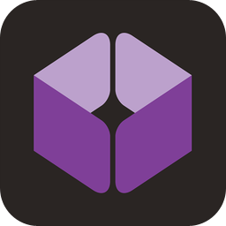

Plunker
"Plunker is an online community for creating, collaborating on and sharing your web development ideas."
ShiftEdit - The Online IDE
"The online IDE is one of the final frontiers of apps ported to the web. I would like to be able to develop from any computer or operating system and have the same experience without having to install software or configure anything." - Adam Jimenez (founder)
HSL color picker by Brandon Mathis
HSL is an intuitive way to define colors. This web-tool will help you get started with being able to visualize and translate into HSL any color you can imagine.
ZenPen by Tim Holman
"A minimalist writing zone, where you can block out all distractions and get to what's important. The writing!"

Codeanywhere.com
"We all want everything here, now, fast and with no hassle (no need to install anything). This is what Codeanywhere does, it lets you code from anywhere, without the need to bring anything along with you. Just log on to Codeanywhere with any computer or smartphone, and all your servers (FTP, SFTP and Dropbox), files, everything is waiting for you, even the files you left open will be open when you login again."
|
RegExr v2.0 by gskinner
"RegExr is an online tool to learn, build, & test Regular Expressions (RegEx / RegExp)."
 JS Bin
JS Bin
"JS Bin is a tool that enables you to learn, experiment and teach using web technologies.
There's a mass of features packed inside of JS Bin, but our aim is to be part of your tool chain to help you solve problems, explore technology and teach others."
 CodePen.io
CodePen.io
"CodePen is an HTML, CSS, and JavaScript code editor in your browser with instant previews of the code you see and write. You can use it to build and show off interesting things you've built, build reduced test cases to troubleshoot with, or collaborate with other front end developers."
|
Refresh
Refresh the current loaded website.
Links in blue open in a new tab / window.